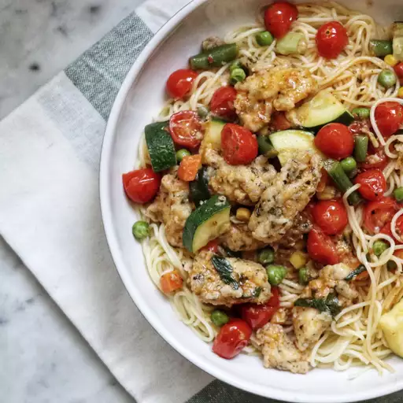

Easy Skillet Chicken Primavera

With a mix of fresh and frozen vegetables, this chicken dinner is super-affordable and customizable. Dig into your spice cabinet to season the chicken breasts with dried parsley and basil, then add frozen mixed veggies and fresh grape tomatoes, green onions, and zucchini. A scoop of sun-dried tomato pesto ties everything together, and you can enjoy the protein and produce mix as a one-pot pasta, over rice, or alongside mashed potatoes.
Ingredients
- ¼ cup extra-virgin olive oil
- 1 tablespoon minced garlic
- 2 ¼ cups low-sodium chicken stock
- 1 cup frozen mixed vegetables
- 1 pint grape tomatoes, halved
- 1 bunch green onions, diagonally sliced
- 1 medium zucchini, quartered and sliced
- 2 tablespoons sun-dried tomato pesto
- salt and ground black pepper to taste
Directions
- Whisk together flour, parsley, and basil in a medium bowl. Add chicken strips and toss until well coated.
- Heat olive oil in a large skillet over medium heat. Add chicken and cook, turning occasionally, until lightly browned on the outside and no longer pink, about 10 minutes. Add garlic and cook for 1 minute.
- Add chicken stock, mixed vegetables, grape tomatoes, green onions, zucchini, and pesto. Cook, stirring occasionally, until heated through, about 10 minutes.